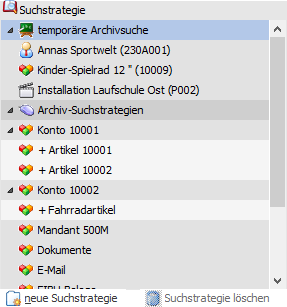
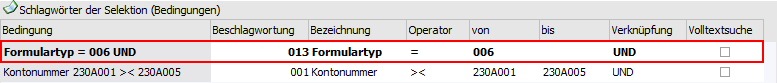
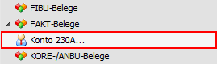
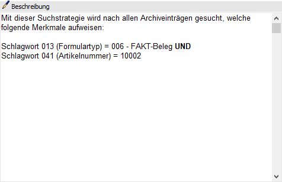

In diesem Register kann entschieden werden, nach welcher Art die Suche durchgeführt werden soll. Dabei gibt es die folgenden Möglichkeiten:
ü Schnellsuche
Bei der
Schnellsuche wird nur ein Suchbegriff eingegeben, wobei dann das Archiv nach
diesen Suchbegriff durchsucht wird.
ü temporäre Archivsuche
Im
Register "Bearbeiten" kann eine temporäre Archivsuche definiert werden. Hierbei
kann angegeben werden, was in welchem Schlagwort stehen soll. Alternativ stehen
die dynamischen Suchstrategien zur Verfügung. Diese werden auf Grundlage der
zuletzt genutzten Objekte gebildet.
ü Archiv-Suchstrategien
In diesem
Bereich können selbst zusammengestellte Archivabfragen abgelegt und in weiterer
Folge ausgeführt werden.

Schnellsuche
Ø Suchbegriff
Wird im Feld "Suchbegriff" ein Suchbegriff eingegeben und der Button "Vor", Button "Anzeige" bzw. Taste F5 oder ins Register "Archivanzeige" geklickt, dann wird sofort die Suche ausgelöst, wobei im Falle der Schnellsuche alle Schlagwörter durchsucht werden, die als Text angelegt sind. Das Ergebnis wird im Register "Archivanzeige" dargestellt.
Achtung
Nach Datum- oder Zahlenwerten kann über die Schnellsuche nicht gesucht werden.
Suchstrategie

In dem Bereich "Suchstrategie" werden alle angelegte Suchstrategien angezeigt.
ü temporäre Archivsuche
Durch
Anwahl von "temporäre Archivsuche" wird in das Register "Bearbeiten" gewechselt
(Doppelklick oder Button "Vor"). Dort kann die temporäre Suche definiert
werden.
ü dynamische
Suchstrategie
Alternativ zur temporären Archivsuche stehen die dynamischen
Suchstrategien zur Verfügung. Diese werden auf Grundlage der zuletzt genutzten
Objekte gebildet.
ü feste Suchstrategie
Unter dem
Eintrag "Archiv-Suchstrategien" werden alle fest angelegten Suchstrategien, für
welche der Benutzer eine Berechtigung aufweist, aufgeführt.
Wenn eine Suchstrategie genutzt werden soll, so muss diese nur per Doppelklick ausgewählt werden. Auch ein Markieren und Anwahl des Buttons "Anzeigen" bzw. Taste F5 ist möglich. Wenn eine Bearbeitung erwünscht ist, dann wird nach Auswahl einfach der Button "Vor" genutzt oder das Register "Bearbeiten" ausgewählt (nicht möglich bei dynamischen Suchstrategien).
Ø
Durch Anklicken des Buttons "neue Suchstrategie" kann eine neue Suchstrategie angelegt werden. Hierfür wechselt die WinLine automatisch in das Register "Bearbeiten", in welchem die Einstellungen für die Suche definiert werden können.
Hinweis
Wenn der Fokus auf einer bestehenden Suchstrategie liegt, dann wird eine verschachtelte Suche angelegt. D.h. es werden automatisch die Bedingungen der Basis-Suchstrategie verwendet. Diese sind nicht veränderbar und werden in Fettschrift angezeigt.

Diese Verschachtelung ist auch in der Übersicht erkennbar.

Ø
Wenn eine bestehende Archiv-Suchstrategie ausgewählt wird, dann kann diese durch Anklicken des Buttons "Suchstrategie löschen" entfernt werden.
Beschreibung

In diesem Bereich kann eine Beschreibung für eine selbst angelegte Suchstrategie hinterlegt werden. Die Speicherung findet bei Anwahl des Buttons "Anzeigen" bzw. der Taste F5 statt.